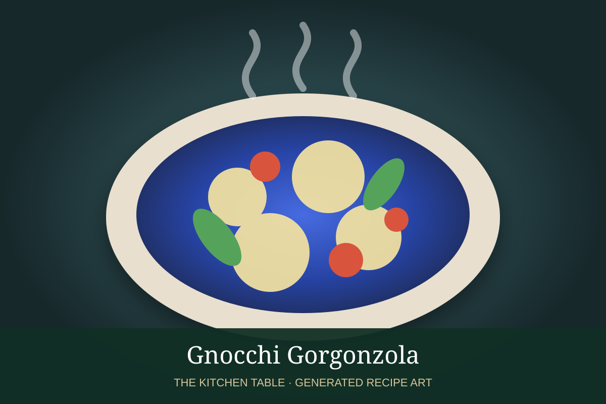

← Back to all recipes
PASTA · ITALIAN
Gnocchi Gorgonzola
Tender potato gnocchi coated in a rich Gorgonzola cream sauce with Parmesan, black pepper, and parsley.
30 minServes 4

Photo: Wikimedia Commons
Ingredients
- 1½ lb potato gnocchi
- 6 oz Gorgonzola dolce, crumbled
- ¾ cup heavy cream
- 2 tbsp unsalted butter
- ¼ cup finely grated Parmigiano-Reggiano
- Freshly ground black pepper
- Pinch of nutmeg, optional
- 2 tbsp chopped flat-leaf parsley
- Kosher salt, for the pasta water
Preparation
- Bring a large pot of well-salted water to a boil.
- Meanwhile, melt the butter in a wide skillet over medium-low heat. Add the cream and bring just to a gentle simmer.
- Add the Gorgonzola and stir until mostly melted and smooth. Stir in the Parmesan, black pepper, and nutmeg if using.
- Cook the gnocchi until they float, then transfer directly to the sauce with a slotted spoon. Add a splash of cooking water if needed.
- Toss gently until the gnocchi are glossy and coated. Finish with parsley and additional Parmesan.
Pasta-water technique: Before draining, reserve at least 1 cup of the hot, starchy cooking water. Add it to the sauce a tablespoon or splash at a time while tossing the pasta. The starch helps emulsify fat, cheese, and sauce so it clings to the pasta and becomes glossy rather than watery.